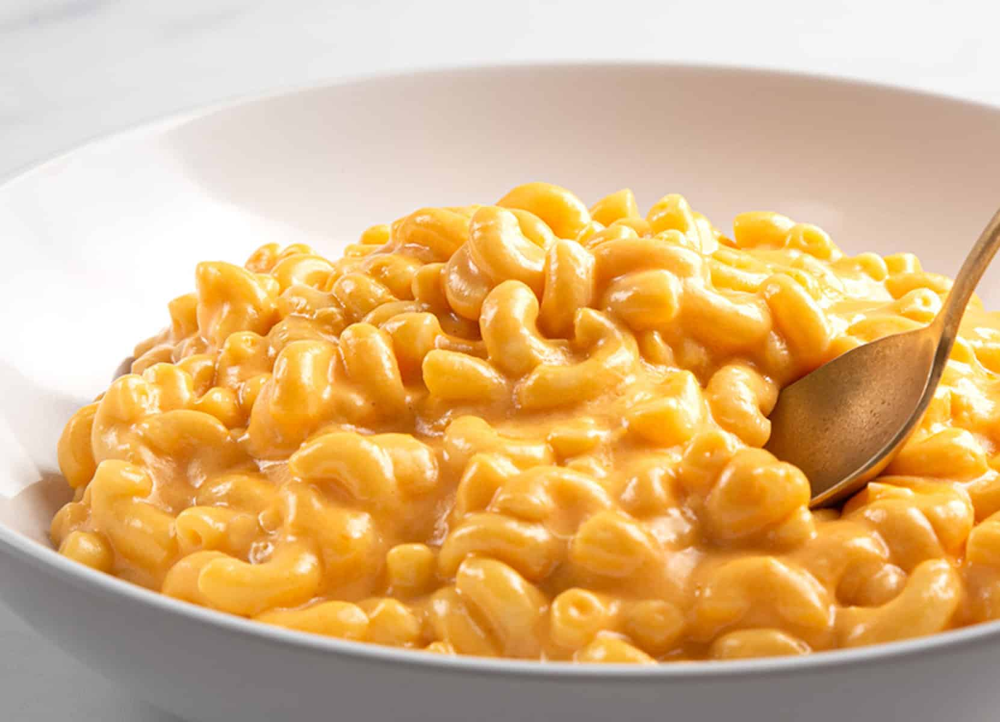

Mac and Cheese

Description
This crockpot mac and cheese is creamy, comforting, and takes just moments to assemble in a slow cooker.
Great for large family gatherings and to take to potluck dinners. It's always a big hit!.
Ingredients
- 1 (16 ounce) package elbow macaronit
- 1/2 cup butter
- salt and ground black pepper to taste
- 1 (16 ounce) package shredded Cheddar cheese, divided
- 1 (5 ounce) can evaporated milk
- 2 large eggs, well beaten
- 2 cups whole milk
- 1 (10.5 ounce) can condensed Cheddar cheese soup (such as Campbell's)
- 1 pinch paprika, or as desired (Optional)
- 1/2 tsp dried oregano
- 1/8 tsp white sugar
- 1 (16 ounce) package lasagna noodles
- 1 pound small-curd cottage cheese
- 3/4 cup grated Parmesean cheese
- 3 large eggs
- 2 tsp salt
- 1/4 tsp ground black pepper
- 1 (16 ounce) package shredded mozzarella cheese
Steps
- Boil the pasta: In salted water, then drain and transfer to the slow cooker.
- Stir in: The butter, seasonings, and about half of the Cheddar.
- Whisk: The evaporated milk and eggs together, then stir into the pasta.
- Whisk: The milk and the soup together, then stir into the pasta.
- Sprinkle: The remaining cheese over the pasta mixture and garnish with paprika.
- Cook on Low for 2 ½ to 3 hours.
Home